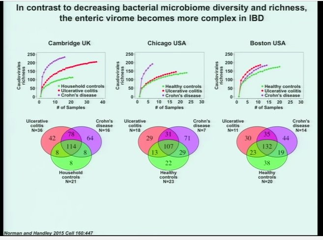

16 Beyond Bacteria
While technically the microbiome refers to all microbes in and around us, most of the everyday usage of that term is limited to bacteria. But bacteria aren’t the only microbes in you, and it’s possible that they aren’t even the most important. There are fungi, of course, and perhaps other too-tiny-to-see lifeforms like protozoa, but one large class of microbes appears to have a major effect on us but is rarely studied: viruses.
Viruses present several problems for scientists. They’re super-tiny for one: you can often fit hundreds of virus-sized particles inside a single bacterium. They’re not always made of DNA, and even when they are, they don’t reproduce on their own.The controversy about whether they should even be considered “alive” is partly due to this lack of reproduction ability, but also because many of them appear to be quite simple: just a sequence of proteins.

These characteristics wreak havoc with the traditional scientists’ toolkit for dealing with small objects: they’re too small to study optically without powerful equipment, and their lack of a reproductive mechanism means you can’t easily amplify their quantity, and their RNA components are unstable and difficult to work with. It’s so much easier to deal with bacteria.
But thanks to some ingenious and difficult work, a few things are clear.
Viruses, like bacteria, are everywhere. In fact, just about every human on earth is infected, right now, with dozens of them.1

Unlike bacteria, viruses are so tiny that they can slip through cracks in the body that would normally stop bigger pathogens. The placenta, for example, can pass viruses like rubella (German Measles), cytomegalovirus, HIV, and Zika.
Some viruses may actually be good for us. The ratio of viruses to bacteria is higher on the body’s mucosal surfaces, such as in the gut or the nose, perhaps because these viruses (called phages) are programmed to attack pathogenic bacteria before they make it through the mucosal lining.2
A virus that circulates in your body is considered “latent” if you appear to be none the worse for it, but it’s hard to tell if that’s ultimately good or bad. Humans have been studying viruses for only a few decades, but viruses have been studying us for, well, forever. The chromosomes of virtually every organism on earth shows the tell-tale signs of viral interference.
Latent viruses may not cause any obvious symptoms, but they continue to hijack cells, vigorously making copies of themselves, inhabiting every nook and cranny of the body while waiting for something to happen. In mice, and presumably humans, it’s been shown that a particular type of listeria infection is inhibited when a formerly-latent virus gets word that the bacterium is in the body. The listeria pathogen ordinarily causes terrible disease symptoms, but in the presence of a latent herpes virus, nothing happens.
The nasty helminth worm, scourge of the tropics and an enemy of humans since time immemorial, actually wakes up the latent herpes virus, which has a sensor fine-tuned to detect it, in turn causing another reaction that will shut down the helminth again. If the virus is not present, guess what: the worm goes about its awful parasitical business; but with the virus, nothing happens. So which is worse: herpes virus or a helminth infection? Best, apparently, is to have both. Trouble awaits the body who has only one or the other.
This is true all over evolution and it may explain why some studies are frustratingly hard to reproduce. An experiment that works in one lab, with the same type of animal with the same food, doesn’t work in another lab, no matter how carefully they try to make the experiments identical. Maybe the only difference is that one location happens to have a geographically-specific virus lurking about, and that is just enough to activate a cascade of reactions that nullifies the experiment. What a pain.
Much popular microbiome advice suggests that more diversity is better, and intuitively it makes sense that a body with a variety of different microbes has a more robust defense system than somebody with a more restricted microbiome. Whether this is always true among bacteria is open for debate — I for one think it matters a lot which microbes you have, rather than the variety alone — but in the virome there is evidence that more diversity causes more problems.

IBD and Crohn’s patients who were carefully studied alongside healthy controls appear to have a wider variety of viruses in their systems. It’s too early to say whether this has any implications for treatment, but it does point out that the story is more complicated than we’d hope.
Similarly, the virome of colorectal patients is so different from healthy people that researchers suspect the cascade of events leading to cancer may be triggered by differences in the way phages affect gut bacteria, and not the bacteria themselves. Furthermore, the phages seem to act as a community, making it unlikely that a single culprit starts the process. Rather the cancer results in some unknown, impossibly complex disturbance in the community as a whole.3
In fact, if you’re not super careful to control for the variety and types of viruses present, it could be that taking a probiotic could be harmful. Your body may have a perfectly good reason that a particular, otherwise beneficial microbe is missing or lower in quantity than in comparable healthy people. Introducing a bacterium that reacts with a latent virus could actually cause more harm than good.
There’s no solid evidence for this yet, but if true, it points in the same disturbing direction for treatment that we’ve been afraid to admit all along: the best way to treat any disease is through ordinary food. Don’t go messing with microbes unless you know what you’re doing.
16.0.1 The gut phageome
About half of all people appear to share at least some of a core group of phages, leading some scientists to speculate that, beyond the microbiome may lay a “Healthy gut phageome” (HGP). Another group of phages seems to be much rarer, occuring generally in people of various disease states. Could it be that it’s the phages, not the microbes themselves that drive some types of disease?4
16.0.2 Insects and the microbiome
(DRAFT)
see “The tiniest tiny genomes” 10.1146/annurev-micro-091213-112901
From Rachel Thomas
An astonishing 60% of insects (including butterflies, bees, and beetles) around the world have the bacteria Wolbachia. This fascinating bacteria can have some surprising impacts, including reducing the ability of mosquitoes to carry or transmit dengue virus.